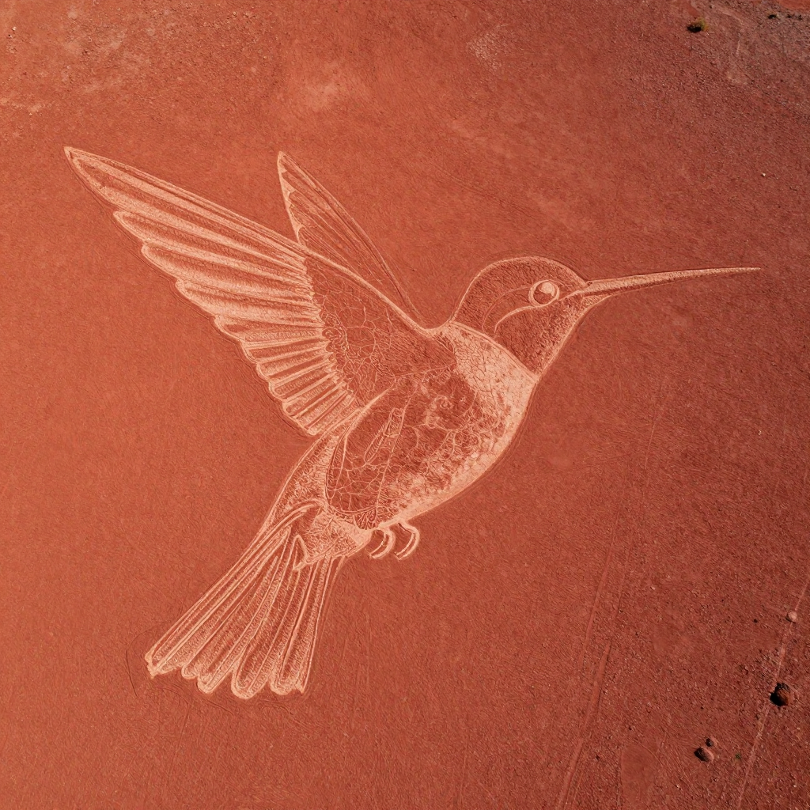
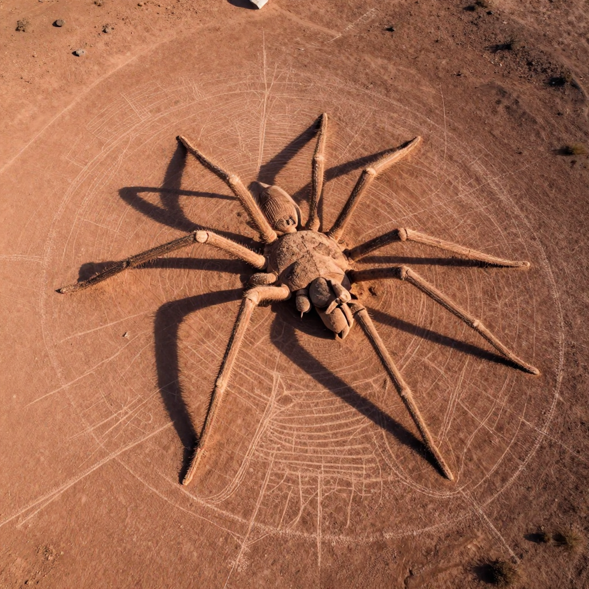

The Nazca Lines: Giant Drawings in the Desert!

Giant figures etched into the desert - some are bigger than a football field!
Imagine drawing pictures so big that you can only see them from an airplane. Now imagine doing this 2,000 years ago - when airplanes didn't exist!
That's exactly what ancient people did in Peru. They created the Nazca Lines - massive drawings in the desert that cover over 400 square kilometers (150 square miles). But here's the mystery: why did they make art they couldn't even see?
What Are the Nazca Lines?
The Nazca Lines are giant "geoglyphs" - drawings made on the ground - in the desert of southern Peru. They were created by removing the dark top layer of stones to reveal the lighter soil underneath.
There are hundreds of individual figures, including:
- 🐦 Animals: hummingbird, spider, monkey, whale, dog, lizard, and more
- 🌱 Plants: trees, flowers, and strange spiral shapes
- 👤 Human-like figures: including one called "the astronaut"
- 📐 Geometric shapes: triangles, circles, and hundreds of straight lines

The hummingbird is 97 meters (318 feet) long - that's longer than a football field!
📏 Mind-Boggling Scale
Some of the straight lines stretch for several kilometers. The largest figures span over 200 meters (650 feet). Yet the lines are incredibly straight, and the drawings are perfectly proportioned!
How Were They Made?
The Nazca people created these lines between 500 BCE and 500 CE. They didn't have modern tools or even wheels. So how did they do it?
The method was actually quite simple:
1. They removed the dark reddish stones from the desert surface
2. This revealed the lighter colored soil underneath
3. The contrast created visible lines
The desert's extremely dry climate has preserved these lines for over 2,000 years. There's almost no rain or wind to erode them!

The spider figure is 46 meters (150 feet) long. Some think it represents a fertility ritual!
The Big Mystery: Why?
Here's what puzzles scientists: the Nazca people couldn't fly. They had no way to see their creations from above. So why spend centuries making giant art that you can't fully appreciate?
Several theories have been proposed:
🙏 Religious Purpose: The lines might have been walkways for religious ceremonies. The figures could have been offerings to the gods who WOULD see them from the sky.
⭐ Astronomical Calendar: Some lines point to where the sun and stars rise and set at certain times of year. Maybe the lines were a giant astronomical calendar!
💧 Water Rituals: The Nazca lived in a very dry place. Some think the lines were part of ceremonies to ask the gods for rain.
👽 Aliens? Some people (famously, Erich von Daniken) claimed aliens made the lines as landing strips. But most scientists disagree - the Nazca were definitely capable of making them!
🔍 How Did They See Them?
Researchers think the Nazca used small-scale models and scaffolding to plan the designs. Some figures can be partially seen from nearby hills!
Discovering the Lines
Local people always knew about the lines, but scientists only became interested in the 1920s when airplanes began flying over the desert. Pilots were amazed to see giant animals and shapes below them!
In 1994, the Nazca Lines became a UNESCO World Heritage Site. Today, tourists can take small plane flights to see the incredible figures from the air.
The Mystery Continues
Despite decades of study, the Nazca Lines keep their secrets. New figures are still being discovered - including one found as recently as 2020 using drones!
Were they messages to the gods? An ancient calendar? Something else entirely? The Nazca Lines remind us that ancient people were far more creative and sophisticated than we often imagine!
Clear Summary of the Evidence
The Nazca Lines: Giant Drawings in the Desert! can sound dramatic, but the best way to understand it is to separate strong evidence from speculation. This article focuses on documented facts, source quality, and clear historical context.
In simple terms, this topic matters because it connects three ideas: what happened, how we know, and what remains uncertain. The core story in The Nazca Lines: Giant Drawings in the Desert! is easier to follow when we use a timeline, define key terms, and point directly to sources.
Imagine drawing pictures so big that you can only see them from an airplane. Now imagine doing this 2,000 years ago - when airplanes didn't exist!
Background Timeline (What Happened, Step by Step)
- In 1994, the Nazca Lines became a UNESCO World Heritage Site .
- New figures are still being discovered - including one found as recently as 2020 using drones!
- Experts continue revisiting The Nazca Lines: Giant Drawings in the Desert! as better tools and stronger source checks become available.
- Experts continue revisiting The Nazca Lines: Giant Drawings in the Desert! as better tools and stronger source checks become available.
- Experts continue revisiting The Nazca Lines: Giant Drawings in the Desert! as better tools and stronger source checks become available.
This timeline view clarifies the sequence of events and helps test whether later claims fit documented records.
What We Know with Strong Support
Across discussions of The Nazca Lines: Giant Drawings in the Desert!, several points are consistently supported by records or repeatable analysis:
- Imagine drawing pictures so big that you can only see them from an airplane.
- Now imagine doing this 2,000 years ago - when airplanes didn't exist!
- They created the Nazca Lines - massive drawings in the desert that cover over 400 square kilometers (150 square miles).
- But here's the mystery: why did they make art they couldn't even see?
These claims are stronger because they can be checked independently, rather than depending on one dramatic story or one unverified source.
How Researchers Study This Topic
Good history is a method, not just a story. When experts examine The Nazca Lines: Giant Drawings in the Desert!, they usually combine source criticism, technical analysis, and contextual comparison.
- Archaeologists compare excavation reports, layer dates, and artifact context rather than relying on isolated objects.
- Museum catalogs and conservation notes help separate original features from later restoration changes.
- Scholars test competing interpretations against material evidence, inscriptions, and parallel finds from nearby sites.
Strong analysis starts by checking whether a claim is supported by verifiable evidence and independent review.
What Experts Still Debate
Even with good evidence, not every question has a final answer. In The Nazca Lines: Giant Drawings in the Desert!, debates often continue because the surviving data is incomplete, damaged, or interpreted in different ways.
One common source of confusion is mixing the topics of What Are the Nazca Lines?, How Were They Made?, and The Big Mystery: Why? as if they prove the same thing. In reality, each part of the story may require different standards of proof.
A balanced approach is to keep uncertainty visible: we can confidently state what records show today, while leaving room for future evidence to update the picture.
Myths vs. Evidence
Myth: If a topic is mysterious, experts have no idea what happened.
Evidence-based view: Usually, experts know many parts of the story; the debate is about specific details.
Myth: The most dramatic explanation is probably true.
Evidence-based view: The best explanation is the one that matches the most verifiable facts with the fewest assumptions.
Myth: New claims automatically replace old research.
Evidence-based view: New claims become accepted only after careful checks, replication, and critical review.
Why This Story Still Matters Today
The Nazca Lines: Giant Drawings in the Desert! is not only a curiosity from the past. It also provides a well-documented case for comparing primary records, later interpretations, and unresolved evidence questions.
This matters because careful source-checking reduces misinformation and keeps historical interpretation anchored to evidence.
Mini Glossary (Plain Language)
- Primary source: A record made close to the event, like a report, letter, inscription, or official document.
- Secondary source: A later explanation that interprets primary evidence.
- Hypothesis: A proposed explanation that must be tested against evidence.
- Consensus: The view most experts currently support, knowing it can change with new data.
- Context layer: The archaeological layer where an object is found, which helps date and interpret it.
- Provenance: The known history of where an artifact came from and who handled it over time.
Quick Recap
If you remember only three things about The Nazca Lines: Giant Drawings in the Desert!, keep these: (1) there is real evidence worth studying, (2) some questions remain open, and (3) careful source-checking is the best path to reliable understanding.
That balance of curiosity and caution helps separate durable historical findings from speculation.
References & Further Reading
Editorial note: We cross-check claims across multiple independent sources. See our Editorial Policy.